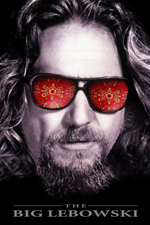
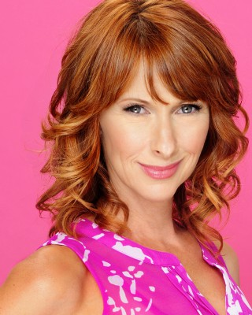

#853 The Big Lebowski
 
 IMDB-Wertung: 8.1 / 10
IMDB-Wertung: 8.1 / 10  IMDB-TOP-Platzierung: 172
IMDB-TOP-Platzierung: 172  Metascore: 71
Metascore: 71 
The Big Lebowski ist eigentlich ein Millonär aus LA, dessen Ehefrau Bunny hohe Geldschulden hat. Der „Dude“ heißt wie der Millionär auch Jeffrey Lebowski, aber er ist arbeitslos, faul und ein 60er Jahre Nostalgiker, der gerne mit seinen komischen Freunden Walter und Donny bowlen geht. Eines Tages erwarten ihn zwei Geldeintreiber. Sie haben ihn mit dem echten Big Lebowski verwechselt und fordern von ihm das Geld, das seine angebliche Frau Bunny ihnen schuldet. Nachdem sie auf seinen Lieblingsteppich uriniert haben, begibt sich der beleidigte Dude auf die Suche nach dem richtigen Big Lebowski. Der Millionär will zuerst nichts vom Alt-Hippie wissen und schickt ihn weg. Doch Bunny wird entführt und Big Lebowski heuert seinen Namensvetter als Lösegeldkurier an. Als Walter, der verstörte Vietnamveteran, ein Teil des Lösegeldes behalten will, fangen die Problem für den Dude erst richtig an…
Jahr: 1998
Dauer: 117 Minuten
FSK: 12
Land: USA Studio: ITonspuren: DTS - ,
Untertitel: Deutsch,
Auflösung: 1080p (1920x1040) Größe: 6133 MB
Genre: Komödie, Krimi
Regisseur:  Joel Coen,
Joel Coen,  Ethan Coen
Ethan Coen
Drehbuch: Ethan Coen, Joel Coen
Soundtrack: Carter Burwell
Darsteller:
 Jeff Bridges als The Dude
Jeff Bridges als The Dude John Goodman als Walter Sobchak
John Goodman als Walter Sobchak Julianne Moore als Maude Lebowski
Julianne Moore als Maude Lebowski Steve Buscemi als Theodore Donald 'Donny' Kerabatsos
Steve Buscemi als Theodore Donald 'Donny' Kerabatsos David Huddleston als The Big Lebowski
David Huddleston als The Big Lebowski Philip Seymour Hoffman als Brandt
Philip Seymour Hoffman als Brandt Tara Reid als Bunny Lebowski
Tara Reid als Bunny Lebowski Philip Moon als Woo, Treehorn Thug
Philip Moon als Woo, Treehorn Thug Mark Pellegrino als Blond Treehorn Thug
Mark Pellegrino als Blond Treehorn Thug Peter Stormare als Nihilist #1, Uli Kunkel / 'Karl Hungus'
Peter Stormare als Nihilist #1, Uli Kunkel / 'Karl Hungus' Flea als Nihilist #2, Kieffer
Flea als Nihilist #2, Kieffer Torsten Voges als Nihilist #3, Franz
Torsten Voges als Nihilist #3, Franz Jack Kehler als Marty
Jack Kehler als Marty John Turturro als Jesus Quintana
John Turturro als Jesus Quintana- Carlos Leon als Maude's Thug #1
 Richard Gant als Older Cop
Richard Gant als Older Cop Christian Clemenson als Younger Cop
Christian Clemenson als Younger Cop- Dom Irrera als Tony the Chauffeur
 David Thewlis als Knox Harrington
David Thewlis als Knox Harrington- Lu Elrod als Coffee Shop Waitress
 Mike Gomez als Auto Circus Cop
Mike Gomez als Auto Circus Cop Peter Siragusa als Gary the Bartender
Peter Siragusa als Gary the Bartender Sam Elliott als The Stranger
Sam Elliott als The Stranger Marshall Manesh als Doctor
Marshall Manesh als Doctor- Harry Bugin als Arthur Digby Sellers
- Luis Colina als Corvette Owner
 Ben Gazzara als Jackie Treehorn
Ben Gazzara als Jackie Treehorn Leon Russom als Malibu Police Chief
Leon Russom als Malibu Police Chief- Ajgie Kirkland als Cab Driver
 Jon Polito als Da Fino
Jon Polito als Da Fino- Aimee Mann als Nihilist Woman, Franz's Girlfriend
- Jennifer Lamb als Pancake Waitress
-  Wendy Braun als Chorine Dancer , uncredited
- Asia Carrera als Sherry in 'Logjammin' , uncredited
 Kiva Dawson als Dancer , uncredited
Kiva Dawson als Dancer , uncredited- Jeff Dowd als Bowler , uncredited
- Robin Johnson als Checker at Ralph's , uncredited
- Anthony J Sacco als Cook , uncredited
- Jimmie Dale Gilmore als Smokey
- James G. Hoosier als Liam O'Brien, Quintana's Partner
- Terrence Burton als Maude's Thug #2
- Gérard L'Heureux als Lebowski's Chauffeur
- Jesse Flanagan als Little Larry Sellers
- Irene Olga López als Pilar, Sellers' Housekeeper
- Jerry Haleva als Saddam Hussein
- Warren Keith als Francis Donnelly, Funeral Director
Datei: X:\1998\Big Lebowski, The (1998, FSK12, 1920x1040).mkv seit 01.04.2015
Festplatte: HD 1996-2002
 Es gibt insgesamt 86 Filme in der Gruppe '1998'
Es gibt insgesamt 86 Filme in der Gruppe '1998'